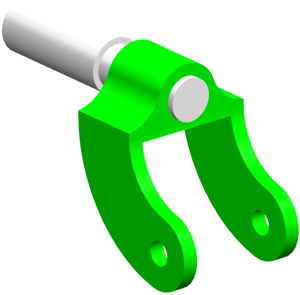

将 des04_caster_ipe 设为工作部件。
选择工作→更新→部件间更新→延迟几何体、表达式和 PMI。
选择工具→更新→部件间更新，然后查看延迟几何体、表达式和 PMI 命令。
一个复选标记显示在延迟几何体、表达式和 PMI 旁，直到您清除复选标记或直接执行更新之前，更新都不会执行。
将直径表达式 theDia = 0.5的值更改为0.875。
更新没有发生。
清除延迟几何体、表达式和 PMI 命令旁的复选标记。
各个组件的直径都按照您刚才编辑的值更新。

关闭所有部件。